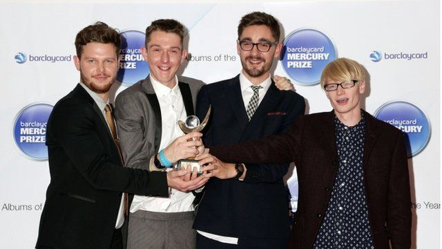

Символ и название группы — ∆, произносится alt-J — британская инди-рок группа, основанная в 2007 году в городе Лидс. Группу основали: Джо Ньюман (гитара/вокал), Гас Ангер-Гамильтон (клавиши/вокал), Том Грин (барабаны), Гвил Сайнсбери (гитара/бас).
Группа alt-J была образована, когда Гвил Сайнсбери, Джо Ньюман, Гас Ангер-Гамильтон и Том Грин встретились в Лидском Университете в 2007. Во втором году обучения Ньюман показал Сайнсбери тексты своих песен и тогда они стали создавать с ним музыку. Они репетировали в общежитии. Необычное звучание группы связано с тем, что в студенческих общежитиях нельзя было шуметь, и поэтому они были не в состоянии использовать бас гитары или бас барабаны.
Их четыре трека «Breezeblocks», «Hand-Made», «Matilda» и «Tessellate» были записаны с продюсером Чарли Эндрю в Лондоне. После песен «Matilda» и «Fitzpleasure» последовала песня «Breezeblocks», так стал образовываться альбом An Awesome Wave. Группа стала регулярно выступать на летних фестивалях в том числе и на Latitude, Bestival, Reading and Leeds. У них так же был тур по Америке в декабре 2012 и они выступали на Laneway Festival tour в Австралии. В 2012 году группа была объявлена победителями Mercury Prize за их альбом. Вскоре альбом достиг 13-го места в Британском Чарте.

Гвил Сайнсбери покинул alt-J 13 января 2014 года. Было объявлено в Твиттер, что он вынужден уйти, но группа будет продолжать существовать. В начале июня 2014 года alt-J объявили о начале их тура, который состоится в Северной Америке в течение октября и ноября. 23-дневный тур начался 14 октября в Ванкувере и закончился в Вашингтоне, округ Колумбия 19 ноября. 9 июня 2014 года группа объявила о выходе второго альбома под названием This Is All Yours, который был выпущен 22 сентября.